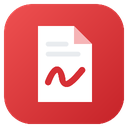

PdfEditor
Everything for PDFs, offline.
Open a PDF
Choose a file from this device
Recent
Document
1 / 1
100%
Pages
Select all
Reading mode
A−
A+
Compare
Next difference
Working…
Cancel
Drop to open
PDF, pictures or Office files